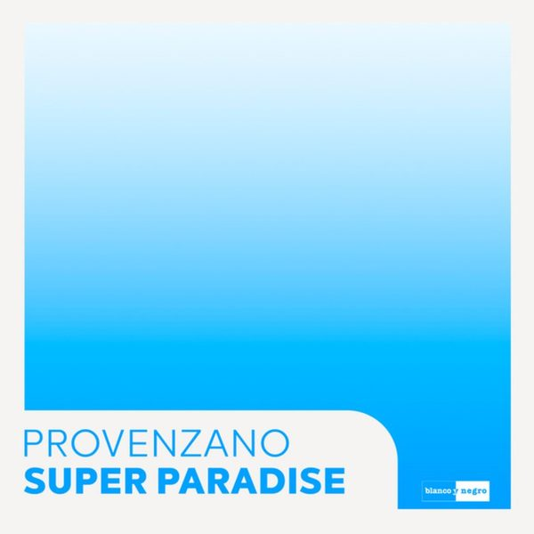

← Tutte le puntate
Crossover #212.
Data di uscita Il radioshow
Dove
Radio WowFM, Emilia-Romagna · il lunedì alle 14
Radio Super SoundFM, Sardegna · il sabato
Stardust Radioweb
I 18 dischi

1 SuperparadiseProvenzano 2
What Do You WantHoney & Badger feat. Haylee Wood
2
What Do You WantHoney & Badger feat. Haylee Wood
 3
One In A MillionMarc Benjamin & Rory Hope
3
One In A MillionMarc Benjamin & Rory Hope
 4
Papi DuroJavi Reina x Jesus Fernandez
4
Papi DuroJavi Reina x Jesus Fernandez
 5
Bass FaceAC Slater feat. Young Lyxx
5
Bass FaceAC Slater feat. Young Lyxx
 6
MiraclesJason Robert & Skylor Knox
6
MiraclesJason Robert & Skylor Knox
 7
BEATS FOR THE UNDERGROUNDMau P
7
BEATS FOR THE UNDERGROUNDMau P
 8
Never StopThe Reactivitz
8
Never StopThe Reactivitz
 9
Le DamoJose De Mara, CIGANDA
9
Le DamoJose De Mara, CIGANDA
 10
Bring That BackLesgo
10
Bring That BackLesgo
 11
New DayMOGUAI x Nora Van Elken x Lohrasp Kansara ft. Norman Alexander
12
Better Than MusicDr. Bazil
11
New DayMOGUAI x Nora Van Elken x Lohrasp Kansara ft. Norman Alexander
12
Better Than MusicDr. Bazil
 13
Sweet Disposition (John Summit & Silver Panda Extended Remix)The Temper Trap
13
Sweet Disposition (John Summit & Silver Panda Extended Remix)The Temper Trap
 14
Fly GuySNBRN
14
Fly GuySNBRN
 15
Missing UEXYT
15
Missing UEXYT
 16
ControlMORTEN
16
ControlMORTEN
 17
You're All DrunkBRKLYN
17
You're All DrunkBRKLYN
 18
Powder In The NoseJames Hurr, Arthur Baker
18
Powder In The NoseJames Hurr, Arthur Baker
La tracklist
- 1 Superparadise Provenzano blanco y negro
- 2 What Do You Want Honey & Badger feat. Haylee Wood DND RECS
- 3 One In A Million Marc Benjamin & Rory Hope Future House Music
- 4 Papi Duro Javi Reina x Jesus Fernandez Bailongo
- 5 Bass Face AC Slater feat. Young Lyxx Night Bass Records
- 6 Miracles Jason Robert & Skylor Knox MNTN Records
- 7 BEATS FOR THE UNDERGROUND Mau P Repopulate Mars
- 8 Never Stop The Reactivitz There Is A Light
- 9 Le Damo Jose De Mara, CIGANDA Toolroom Records
- 10 Bring That Back Lesgo Altra Moda Music
- 11 New Day MOGUAI x Nora Van Elken x Lohrasp Kansara ft. Norman Alexander PUNX Records
- 12 Better Than Music Dr. Bazil Safari Music
- 13 Sweet Disposition (John Summit & Silver Panda Extended Remix) The Temper Trap UPPERGROUND
- 14 Fly Guy SNBRN Musical Freedom
- 15 Missing U EXYT Hexagon
- 16 Control MORTEN Future Rave
- 17 You're All Drunk BRKLYN Dim Mak Records
- 18 Powder In The Nose James Hurr, Arthur Baker Toolroom Records